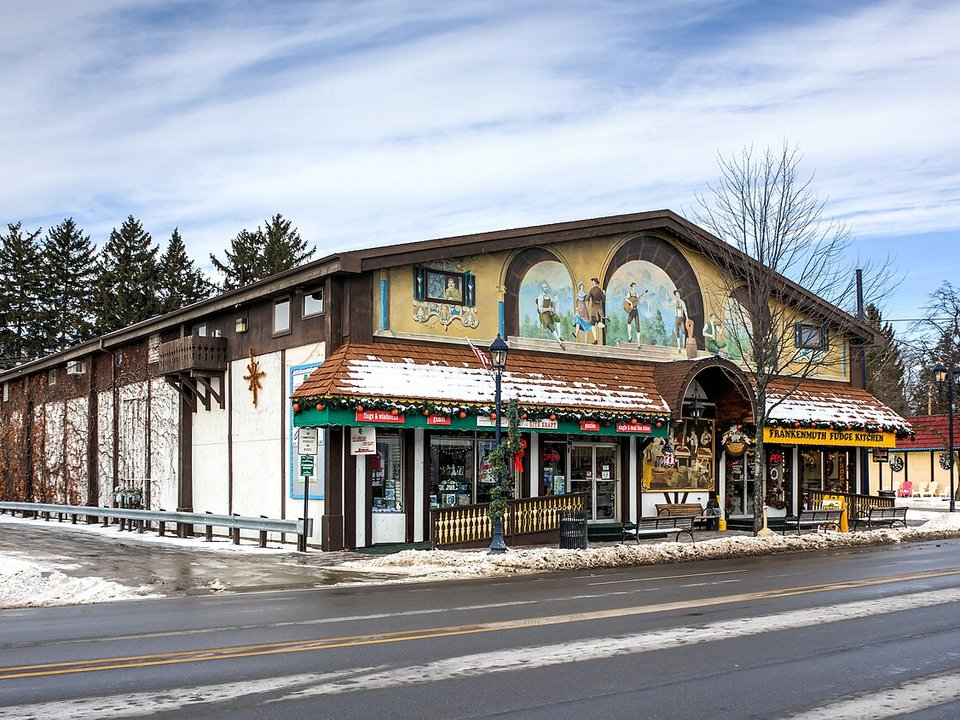

Frankenmuth · Resort hotel
Bavarian Inn Lodge
A large lodge by the river, with pools and a family entertainment center.
Official details for Bavarian Inn LodgeChicken dinners and Christmas year-round.
Frankenmuth was settled by Bavarian Lutherans in 1845 and has made a whole town of the theme, with half-timbered buildings, a glockenspiel tower and a covered bridge over the Cass River. Land at MBS International, stay at the Bavarian Inn Lodge or Zehnder’s Splash Village, sit down to an all-you-can-eat chicken dinner, shop Bronner’s CHRISTmas Wonderland, and take the Bavarian Belle riverboat.

Time illustration: direct distance at 150 KTAS plus 15 minutes for departure and arrival, matching the discovery page. Use ForeFlight for your actual flight plan.
Check the weekend weather at both ends → Flight category, your minimums and the crosswind on the best runway.
KMBS, MBS International, is a towered airport at 668 feet with an 8,002-foot main runway near Freeland, about 25 minutes from Frankenmuth.
MBS International Airport, Freeland, MI
An airline airport with a full-service FBO; arrange a rental car ahead. Tiny Zehnder Field (66G) in Frankenmuth is a 2,500-foot turf strip with no fuel; call ahead before using it. No live fuel price is shown.
Great Lakes flying: lake-effect snow and low ceilings from November to March, fog and low clouds off the lakes, summer thunderstorms, and long stretches over cold water and forest with few airports. About 640 nm from Myrtle Beach: plan a fuel stop and three nights.
Rates and availability need travel dates. Christmas season and festival weekends book early.
A large lodge by the river, with pools and a family entertainment center.
Official details for Bavarian Inn LodgeA hotel with an indoor waterpark.
Official details for Zehnder’s Splash VillageInns and B&Bs.
Frankenmuth CVB for More places to stayPrices and availability for your dates, through our partner Stay22. This is an affiliate link: we may earn a commission at no cost to you. The picks above are never paid.
Reserve weekend dinners.
All-you-can-eat chicken dinners in a huge restaurant on Main Street.
Official details for Zehnder’sChicken dinners and German dishes across the street from Zehnder’s.
Official details for Bavarian Inn RestaurantA brewery on the river, founded in 1862.
Official details for Frankenmuth BreweryRestaurants in Frankenmuth.
Frankenmuth CVB for More restaurantsBronner’s is open year-round, but December is busiest.
This prototype links to the local visitor site. It does not yet match events to your travel dates.
Frankenmuth’s summer festival.
Frankenmuth CVB for Bavarian FestivalBeer tents and polka.
Frankenmuth CVB for OktoberfestLights and holiday shopping.
Bronner’s for Christmas seasonCheck the local calendar when choosing a weekend, and confirm dates and tickets with the organizer.
A sample Frankenmuth weekend. Plan three nights for the flight. No bookings or availability confirmed.
Land at KMBS mid-morning.
A chicken dinner at Zehnder’s.
A short walk, then back to the airport.
Land at KMBS, subject to weather and your actual flight plan.
Walk Main Street and the covered bridge.
Chicken dinner at Zehnder’s.
Bronner’s CHRISTmas Wonderland.
Bavarian Belle riverboat.
Chicken dinner at the Bavarian Inn.
Frankenmuth Brewery brunch.
Allow time at the FBO before departure.
Afternoon thunderstorms are common in summer; leave in the morning.
Bronner’s CHRISTmas Wonderland.
Explore.
Dinner in town.
These details make the difference between an appealing list and a usable getaway.
Hotel, then a rental car.
About 640 nm from Myrtle Beach: plan a fuel stop.
December and festival weekends.
May to December.
Picks and links reviewed by WingAway Weekends. Hours, prices, menus and availability change often, so confirm directly with each place before booking. Spotted something out of date, or have a favorite we missed? Email us at hello@wingawayweekends.com.
WingAway Weekends helps you discover the destination. Use ForeFlight and current official aviation information for route, performance, weather, NOTAMs and preflight decisions. Flight planning and PIC responsibility stay with the pilot.